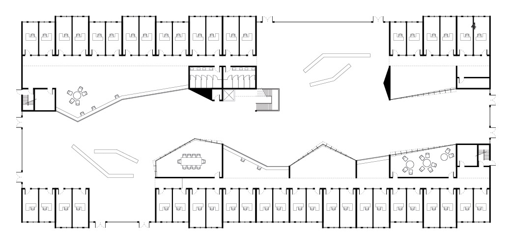

Back to the Future
A Language of Municipal Office Buildings
Laudeman, Sara M
ARCH 8866 AE | Fall 2020 | Georgia Institute of Technology
This project is a continuation of Durandian Shape Grammars. Using the rules from Durand's Precis, the work done in developing a computational shape grammar for Durandian design can be pushed forward into a modern concept for an office space with municipal functionality. Durand proposed twnety-one key rules for the development of town halls. These rules can be altered to accomodate a different type of functionality:
Durand's Rules for Town Halls
- Vestibules and Porches are almost always wider than they are deep.
- Vestibules lead to staircases.
- Rooms may be square, round, or semicircular.
- Rooms may be wider than they are long, or longer than they are wide.
- The central portion of a room must be wider than its flanking aisles.
- Courtyards may be square or circular.
- Courtyards may be wider than they are long, or longer than they are wide.
- Courtyards may have surrounding porticoes, walls, or both.
- External stairs are built in straight, single flights.
- Interior stairs may be straight, spiral, wrap the corner, or switch back onto themselves.
- All columns must be equally spaced.
- External walls should pass in a straight line from one corner to the other.
- Interior (cross) walls should pass in a straight line from one external wall to another.
- Parts shall be constructed so that the front and back are the same in form.
- Walls, columns, doors, and windows should be placed on common axes.
- Rooms should be placed on common axes.
- Assemblages shall have bilateral symmetry.
- The central axis of each room will align with the next.
- Rooms shall be joined corner to corner.
- Rooms are connected within a sequence (vestibule -> stair, etc.)
- The construction shall align on a modular grid. Each module is 25cm.
Proposed Rules for Municipal Office Buildings
- Rooms may be wider than they are long, or longer than they are wide.
- Courtyards may be wider than they are long, or longer than they are wide.
- Courtyards may have surrounding porticoes, walls, or both.
- External walls should pass in a straight line from one corner to the other.
- Rooms are connected within a sequence (vestibule -> stair, etc.)
- The construction shall align on a modular grid. Each module is 25cm.
- The interior face of a room need not align with the underlying grid.
- The parts need not align specifically on their shared axes, although the individual elements should.
The development of town halls and office buildings can be traced through the years since Durand. Consistent across all of these examples are offices, atria or central halls, and shared meeting spaces.
The development of the massing scheme for the language of municipal offices that this project proposes is below. A form should, in the Durandian manner, capture the block or site. Following this, the edges of the form should be captured as a rigid office band. Finally, the interface between office and atrium reacts - articulating the common space in the center band of the building.
Much as the rules for the Durandian Town Halls were tweaked, the rules can be changed to accomodate this new typology. The constructive application of this rule set leads to coherent plans consisting of offices, central atria, and flexible work spaces.




As a proof of concept for this scheme, consider a building constructed of three of these variations. For this, consider a site in Atlanta. The block between Ivan Allen Jr Blvd. and W Peachtree Pl. NW is rectangular and currently a surface parking lot. This space allows a good demonstration of the potential of a this language of municipal offices to capture the site in a sensible manner.
The massing of the four main elements of the language reveals the underlying logic. The office bands capture the envelope condition, creating open spaces for gathering on upper floors and entry conditions on the lower level. The core stacks vertically through, hosting bathrooms, stairs, elevators, and storage. The semi-public meeting spaces and open plan offices work their way between offices and the atrium as an interstitial space between the two, and the atrium is a multifaceted construct that carves its way through the project.
In combining three variations on a site, the alg orithmic generation is grounded in reality. The upper floors are edited to define the balcony edge of the atrium condition. Here, the core helps to define a public landing with work spaces and open spaces for gathering and public interaction. In section, the atrium winds its way through the space. Overhead, light filters down across the balconies as well as spilling in from the breaks in the offices along the perimeter of the building. Overhanging levels create sheltered spaces below which provide open plan work space, public desks and benches, and a cafe on the ground level. Canted glass on the meeting rooms interfaces with the atrium, pushing the space outwards, shifting throughout the project in an almost crystaline form, highlighting the reaction between public and private within the project.